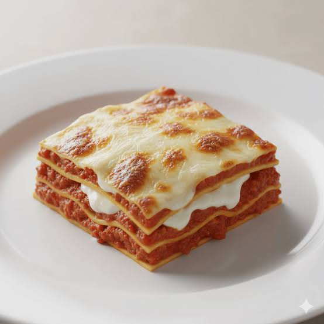
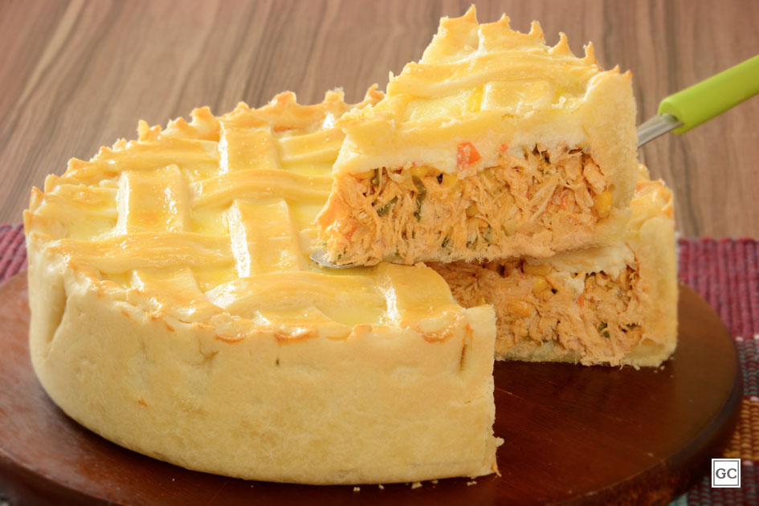

Pratos principais e lanches para o almoço, o jantar ou o café da tarde.
30 min 8 porções
50 min 20 unidades
40 min 4 porções

45 min 6 porções
1h30 6 porções

60 min 8 fatias
60 min 20 unidades
50 min 6 porções